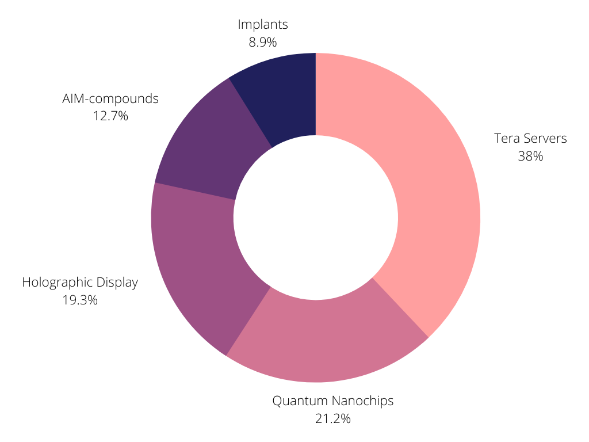

An organization aiming to push the technological boundaries of the Universe, it has used it's expertise in Universal Physics and Theory to exploit flaws in the system such as the conflict between the Conservation of Information and Time Translation Assymetry, and the unconfirmed properties of the speed of light due to the expansion of the universe allowing for faster-than-light travel, manipulating the information of particles, and more. The Artemis Initiative greatly influenced the growth of Universal Exploits, developing inter-dimensional travel, timeline revisions, and optimized matter-energy conversion. A public page was developed to compile what is currently known about the Universe, now known as the Prospera Wikipedia. All other knowledge of the Universe is left censored and blocked by the Alliance to prevent excessive Universal Exploits from being executed, compromising the integrity of the Multiverse Sector. It has developed Class-D2 technological leaps, and is pushing even further with the Artemis Initiative to reach Class-C1 technologies.
The CT company mainly profits from quantum servers hosted witin the Complex, quantum nanochips, and holographic display. About 195.2 trilion credits are made every solar cycle, most of which are funnneled into the Artemis Initiative. It also sells AIM-compounds [add_more] as an enhancer and implant moderator.
Credits: Feli, [Add More]